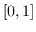
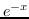
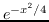

array's random number functions allow arrays to be filled with random
numbers efficiently in a single call. Most of these functions use the
array_urand uniform random object (of type urand), which is
accessible from TCL. The fillgrand() function makes use of the
TCL accessible array_grand object, which is
of type gaussrand.
Fill x with random numbers from the uniform distribution over 
Fill x with random numbers from the Poisson distribution 
Fill x with random numbers from the Gaussian distribution 
Fill x with random integers from the range [0..max] such that no two integers are the same.